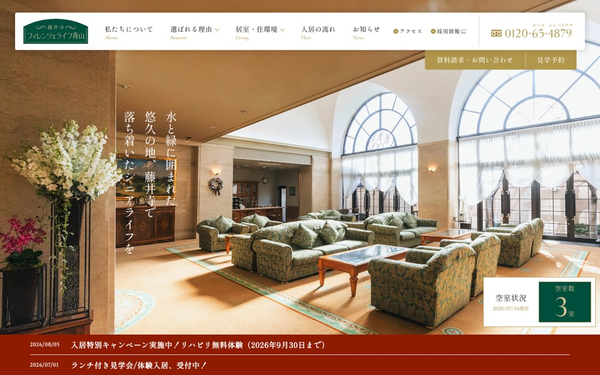

【公式】フィレンツェライフ青山
#f5f3ee の地に #91764a を大きな面で置く配色。影を使って浮かせる。本文 13px・行間 1.5、セクション間 120px。
配色
文字色は #282b2c / #ffffff / #b0974b / #d6be98。
どこに使っているか（箇所数）
| 色 | 面 | 文字 | 枠線 | ボタンの地 |
|---|---|---|---|---|
#004f3c |
4 | 5 | 0 | 0 |
#454545 |
4 | 0 | 0 | 0 |
#887241 |
2 | 0 | 0 | 0 |
#d6be98 |
1 | 5 | 0 | 0 |
#ffffff |
9 | 52 | 2 | 1 |
#282b2c |
0 | 37 | 0 | 0 |
#b0974b |
8 | 14 | 3 | 2 |
#91764a は
文字
和文
Shippori Mincho欧文
Shippori Mincho本文
13px / 行間 1.5この見本は Noto Sans JP で表示していますあのイーハトーヴォのすきとおった風
あのイーハトーヴォのすきとおった風
あのイーハトーヴォのすきとおった風
あのイーハトーヴォのすきとおった風
あのイーハトーヴォのすきとおった風
あのイーハトーヴォのすきとおった風
余白とかたち
| コンテンツ幅 | 1200px | |
|---|---|---|
| 読ませる段の幅 | 680px | |
| セクションの上下余白 | 120px | |
| 並びの間隔 | 4 / 5 / 7 / 15px | |
| 角丸 | 0px（大きな面は 4px） | |
| 影 | rgba(0, 0, 0, 0.1) 0px 0px 10px 5px | |
| 画面幅の切り替え | 1400 / 1280 / 1024 / 768 / 600px |
ボタン
お問い合わせ
transparent / 16px / 400 / 角丸 0px
もっと見る
#b0974b / 16px / 400 / 角丸 0px
もっと見る
transparent / 16px / 400 / 角丸 0px
ページの組み立て
上から順に、実際に並んでいたセクション。高さの比率もそのまま。
1
ヒーロー
240px ・ #d6be98
2
4カラム・画像あり
480px
3
3カラム・画像あり
2120px
4
1カラム・画像あり
2620px
5
4カラム・画像あり
1760px
全5セクション、すべて全幅。
面と、その上に置く線・文字
| 面 | 使用箇所 | 線と文字 |
|---|---|---|
#b0974b |
5 | #91764a |
#454545 |
4 | #ffffff |
#004f3c |
3 | #ffffff |
#887241 |
2 | #ffffff |
線と文字の色は固定ではなく、乗っている面で入れ替える。
部品
同じ形が 5 箇所。角丸 0px ／ 影なし
PCとスマホ
同じサイトを390px幅で測り直した値。
| PC 1440px | スマホ 390px | |
| 本文 | 13px / 行間 1.5 | 13px / 行間 1.5 |
| 見出し | 20px | 13px |
| セクションの上下余白 | 120px | 32px |
| 左右の余白 | — | 20px |
| 並びの間隔 | 7px | 4px |
文字サイズの段は 20 / 16 / 15 / 14 / 13px。セクション余白はPCの27%まで詰める。
画像
4:3・7枚
3:2・6枚
15枚。角丸 0px。